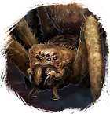
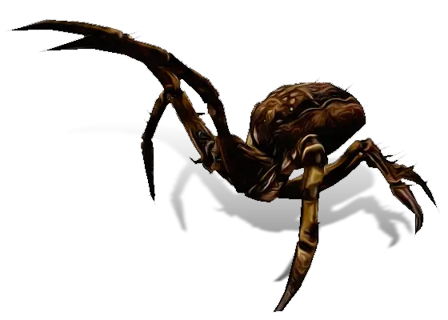

Открыть в интерактивной вики →

| Уровень | 30 |
|---|---|
| Зоны атаки | ближняя, дальняя, ментальная |
| Шанс дропа 100% — уровни | 1-25 |
| Шанс дропа 90% — уровни | 26-30 |
| Шанс дропа 70% — уровни | 31+ |
| Группа боссов | Непокой |
| Сила (PvE) | 491 |
| Аспект | Yantrei |
| Здоровье | 1500 |
| Мана | 1850 |
| Выносливость | 1000 |
Локация
- Логово Крестовика
- Тоннель Крестовика
Команда


Навыки


Дроп
 II
II  Путь непокоя
Путь непокоя 
 Микстура здоровья
Микстура здоровья  Микстура выносливости
Микстура выносливости  Микстура маны
Микстура маны| Рары | Синергетики | Эпики | |||
 Рары Рары Рары Рары Рары Рары | 20 ур. |  | |||
Прочее:  Микстура здоровья Микстура здоровья  Микстура маны Микстура маны  Микстура выносливости Микстура выносливости | |||||
Как добраться
- Тоннель Крестовика — путь: Болота → Паучьи тоннели → Тоннель Крестовика
Умения
 Кровотечение Кровотечение — обычная атака
Кровотечение Кровотечение — обычная атака- Плевок ядом
 Боевой Клич Боевой Клич — паника
Боевой Клич Боевой Клич — паника
Иммунитеты / особые умения
Призыв: Маленький паук